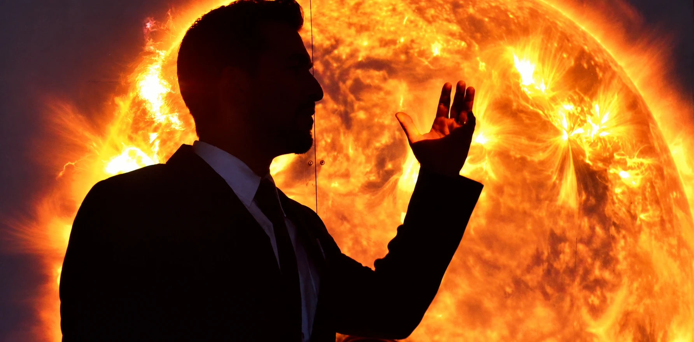
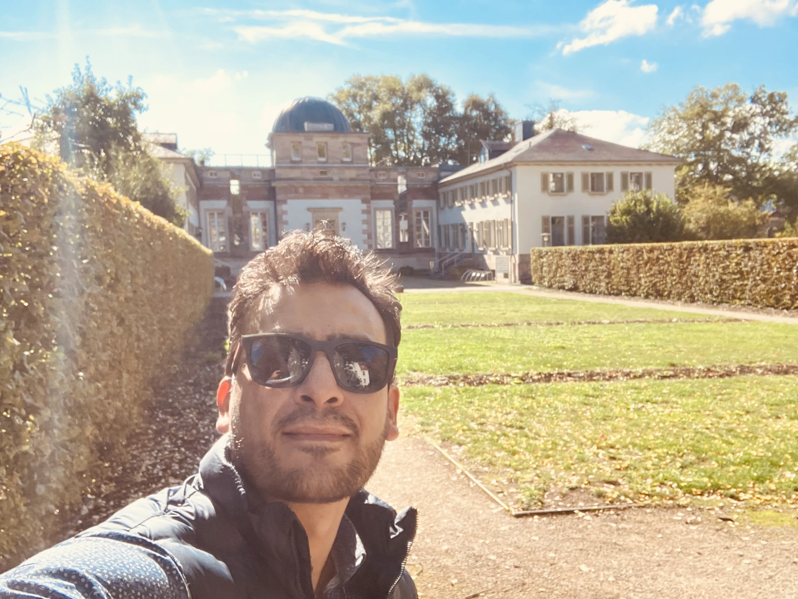
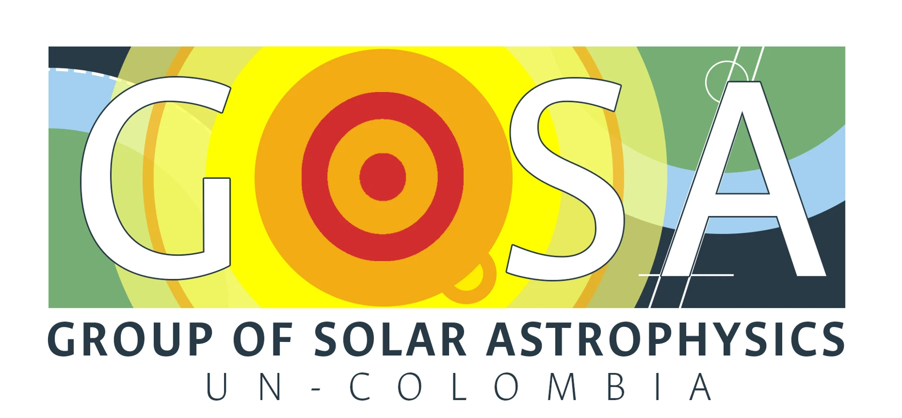
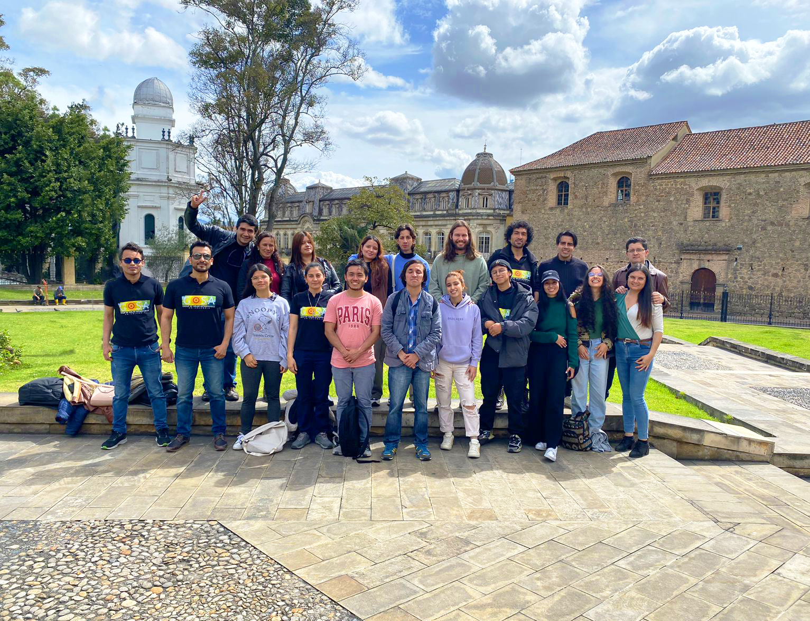
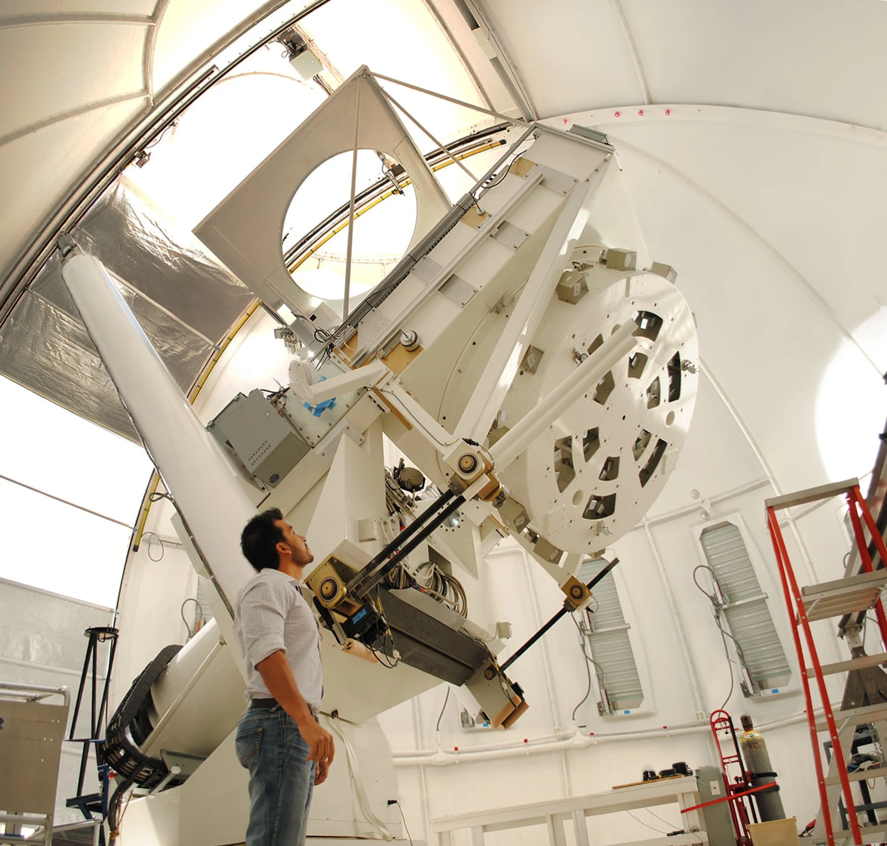

ASTROFÍSICO · PROFESOR · DIVULGADOR
Explorar el Sol.
Compartir el universo.
Santiago Vargas Domínguez investiga el Sol y comparte la curiosidad por el cosmos desde la ciencia, la educación y la cultura.
Profesor del Observatorio Astronómico Nacional - Universidad Nacional de Colombia
Miembro correspondiente de la Academia Colombiana de Ciencias Exactas, Físicas y Naturales.
Su investigación ↗CIENCIA QUE CONECTA
Una vida entre
el Sol y las preguntas.
Profesor asociado de la Universidad Nacional de Colombia y líder del Grupo de Astrofísica Solar, GoSA.
Su trabajo explora la dinámica y el magnetismo del Sol, desde sus estructuras más pequeñas hasta los fenómenos que influyen en el clima espacial. La docencia, la escritura y el diálogo con públicos diversos son parte esencial de ese recorrido.
Trayectoria académica ↗

INVESTIGACIÓN Y FORMACIÓN EN COLOMBIA
Group of Solar Astrophysics
Una comunidad para comprender el Sol.
Lidera el Grupo de Astrofísica Solar (GoSA) del Observatorio Astronómico Nacional, Universidad Nacional de Colombia. El grupo integra investigación, formación de estudiantes y colaboración internacional para estudiar el magnetismo, la dinámica y la actividad del Sol.
Conocer GoSA, su equipo y sus proyectos ↗
TRES FORMAS DE EXPLORAR
Investigar. Enseñar. Comunicar.

01 / INVESTIGACIÓNLa física del Sol
Magnetismo solar, observaciones de alta resolución y clima espacial.
Explorar proyectos ↗ 02 / DOCENCIA
02 / DOCENCIA
Formar nuevas miradas
Cursos, dirección de tesis y formación de investigadores.
Conocer la actividad docente ↗ 03 / DIVULGACIÓN
03 / DIVULGACIÓN
El universo es de todos
Libros, historias y encuentros para acercar la ciencia a la sociedad.
Leer y descubrir ↗LIBROS
Historias para mirar más lejos.
Todos los libros ↗
Reportajes Cósmicos
Un libro de Santiago Vargas Domínguez. Parte de una trayectoria editorial que conecta astronomía, historia y divulgación científica.
Explorar la obra publicada ↗OTRAS FORMAS DE MIRAR